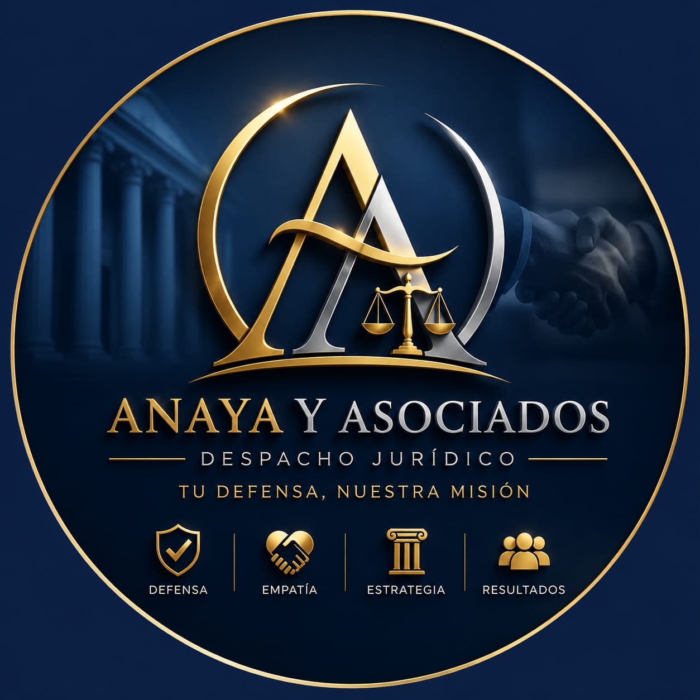

El Lic. Aurelio de la Cruz Anaya cuenta con más de dieciocho años de experiencia en Derecho Penal. Su trayectoria como Agente del Ministerio Público, Fiscal Investigador, Fiscal Especializado, Fiscal Antisecuestro y Fiscal de Juicios Orales le permite comprender el sistema penal desde una perspectiva integral para diseñar estrategias de defensa sólidas y efectivas.
Socio Director de Anaya y Asociados. Socio Fundador de Lozano Guzmán Abogados y LAM Abogados Penalistas.
Hablar AhoraCada etapa de esta trayectoria ha contribuido a desarrollar una visión integral del Derecho Penal, permitiendo diseñar estrategias de defensa respaldadas por experiencia real.
Inicio de actividades en una Agencia del Ministerio Público, adquiriendo una comprensión práctica del funcionamiento institucional y del procedimiento penal.
Participación directa en investigaciones penales, integración de carpetas y conducción jurídica de procedimientos.
Dirección de investigaciones penales, análisis probatorio y fortalecimiento de teorías del caso.
Atención de asuntos complejos que requerían preparación técnica, análisis jurídico y toma de decisiones estratégicas.
Intervención en investigaciones relacionadas con delitos de alto impacto y coordinación de estrategias de actuación.
Litigación ante tribunales del sistema penal acusatorio, preparación de audiencias y argumentación jurídica.
Formación académica de nuevos profesionistas del Derecho, fortaleciendo una visión analítica y técnica del ejercicio jurídico.
Actualmente dirige Anaya y Asociados y participa como Socio Fundador de Lozano Guzmán Abogados y LAM Abogados Penalistas, consolidando un ecosistema jurídico especializado en Derecho Penal.
La experiencia del Lic. Aurelio de la Cruz Anaya se fortalece mediante la participación activa en distintas firmas jurídicas especializadas, permitiendo brindar una atención integral respaldada por un equipo multidisciplinario.

Firma orientada a la defensa penal estratégica y representación jurídica personalizada.
Despacho desde el cual se atiende un importante número de clientes con representación jurídica integral.
Firma especializada exclusivamente en Derecho Penal y defensa técnica de alta especialización.
La combinación de experiencia institucional, litigación estratégica y trabajo coordinado entre distintas firmas jurídicas permite ofrecer una representación sólida, profesional y orientada a resultados.
Tu defensa, nuestra misión.
Cada procedimiento requiere un análisis distinto. Nuestra intervención comienza con la comprensión profunda del caso para diseñar una defensa técnica y personalizada.
Representación jurídica desde la investigación inicial hasta la conclusión del procedimiento penal.
Más informaciónPlaneación y litigación estratégica en audiencias iniciales, intermedias y de juicio.
Más informaciónRepresentación especializada en procedimientos de competencia federal.
Más informaciónProtección constitucional frente a actos que afecten los derechos fundamentales del cliente.
Más informaciónEstudio de pruebas, líneas de investigación y fortalecimiento de la teoría del caso.
Más informaciónSi un familiar acaba de ser detenido, la actuación inmediata puede marcar una diferencia importante en la estrategia de defensa.
Atención inmediataSi enfrenta una investigación penal, una orden de aprehensión o la detención de un familiar, nuestro equipo está preparado para intervenir de inmediato y diseñar la mejor estrategia jurídica para su caso.
Más allá del currículum, la confianza también se construye con cercanía, claridad y compromiso. Le invitamos a conocer nuestra visión del Derecho Penal y la forma en que acompañamos a cada cliente durante uno de los momentos más importantes de su vida.
Si usted o un familiar acaba de ser detenido, no espere. Nuestro equipo puede intervenir inmediatamente.
Solicitar Atención InmediataLa mejor carta de presentación son las experiencias compartidas por quienes confiaron en nuestra representación jurídica.
Si un familiar acaba de ser detenido, si existe una orden de aprehensión o enfrenta una investigación penal, no espere. Nuestro equipo puede intervenir inmediatamente para proteger sus derechos desde el primer momento.
Hablar con un Abogado AhoraLa información correcta permite tomar mejores decisiones. Estas son algunas de las preguntas que recibimos con mayor frecuencia.
Sí. Nuestro equipo brinda representación jurídica en toda la República Mexicana, tanto en asuntos de competencia estatal como federal.
Sí. Nuestro servicio de atención vía WhatsApp permanece disponible las 24 horas, especialmente para situaciones relacionadas con detenciones.
Comuníquese inmediatamente con nosotros. Entre más pronto podamos intervenir, mayores serán las posibilidades de proteger adecuadamente los derechos del detenido.
Sí. Toda la información proporcionada por nuestros clientes se maneja bajo estrictos principios de confidencialidad y ética profesional.
Permítanos conocer su situación jurídica y construir la mejor estrategia para su defensa.
Prolongación Avenida Central Manzana 2, Lote 6
Col. Llano de Morelos I, Ecatepec de Morelos
Estado de México, C.P. 55070
55 3238 2924
adlabogado@gmail.com
Si enfrenta una situación urgente, comuníquese ahora mismo. Nuestro equipo está preparado para brindarle atención inmediata las 24 horas.
Iniciar ConversaciónProlongación Avenida Central, Manzana 2, Lote 6, Colonia Llano de Morelos I, Ecatepec de Morelos, Estado de México.